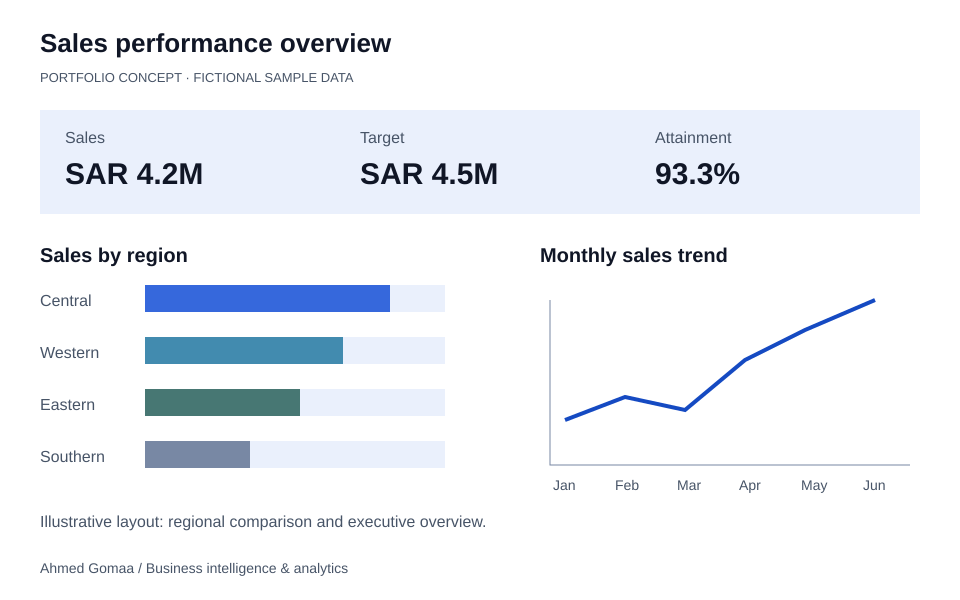
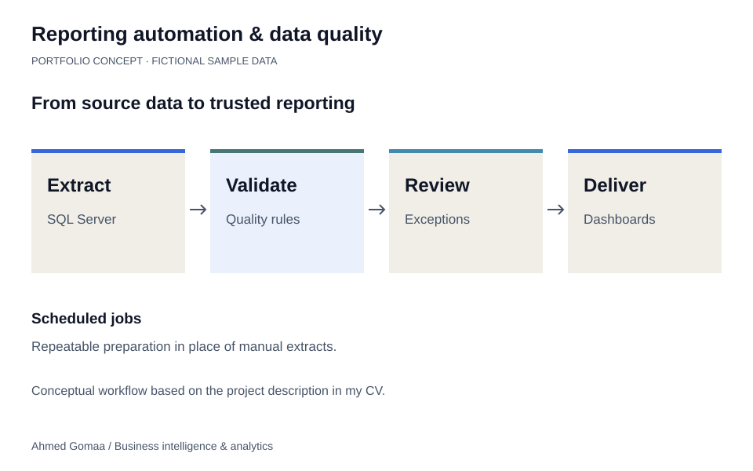
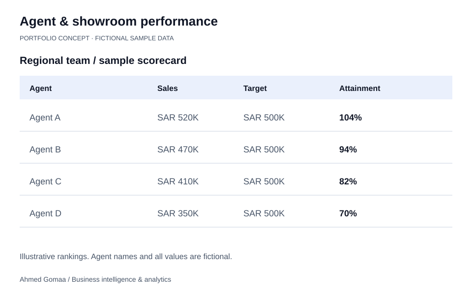

Power BI · DAX · SQL Server · SAP SD
Sales performance, in context.
A reporting suite connecting sales, targets, regions and product mix so commercial teams can explore performance from a shared view.
I build Power BI reports that help commercial teams understand sales performance and decide where to act.
Three case studies in commercial reporting, data quality and sales team performance.

A reporting suite connecting sales, targets, regions and product mix so commercial teams can explore performance from a shared view.

Scheduled preparation and quality checks that turn recurring extracts into a repeatable reporting workflow.

A scorecard bringing dynamic rankings, performance tiers and regional access into one reporting experience.
Portfolio previews use fictional sample data. Project descriptions draw on the experience in my CV.
A short introduction to my work in business intelligence and sales analytics.
Get in touchGood reporting starts with understanding the decisions people need to make. I bring together commercial knowledge and technical skills to turn complex data into clear, practical tools.
Jazeera Paints
Leading commercial analytics and building reporting solutions for business teams.
Microsoft Certified · Power BI Data Analyst Associate (PL-300)
View full CVExplore 30 Arabic video lessons and companion articles on Excel, Power Query and Power BI.
Browse the libraryHave a reporting challenge or an idea for a project? I’d be happy to hear about it.